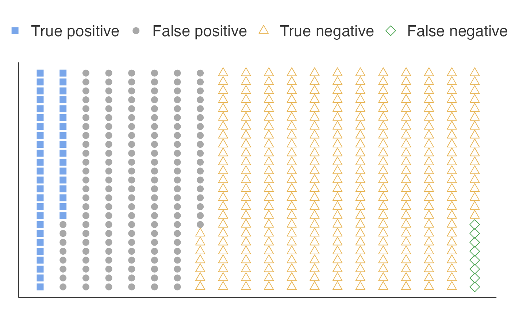

Calculates the Positive Predictive Value (PPV) and False Discovery Rate (FDR) for research findings based on study characteristics. This tool helps researchers understand the probability that their significant findings are actually true, considering factors like prior probability, statistical power, and research biases.
Arguments
- percTrue
The pre-study probability that the tested relationships are true. In exploratory research fields, this may be 10\ confirmatory research with strong theoretical basis, it may be higher.
- alpha
The significance level (Type I error rate) used in the studies. Standard value is 0.05, but may be lower for multiple testing situations.
- power
Statistical power of the studies to detect true effects. Well-designed studies typically have 80\ studies have much lower actual power.
- percHack
Percentage of studies with questionable research practices (p-hacking, selective reporting, data dredging). This represents bias in the research process that increases false positive rates.
Value
A results object containing:
results$confusion | a table containing the true/false positives/negatives | ||||
results$ppv | a html | ||||
results$dotPlot | an image |
Tables can be converted to data frames with asDF or as.data.frame. For example:
results$confusion$asDF
as.data.frame(results$confusion)
Examples
# Calculate PPV for a typical medical research scenario
ppv(
percTrue = 10, # 10\% of tested hypotheses are true
alpha = 0.05, # 5\% significance level
power = 0.80, # 80\% power
percHack = 30 # 30\% of studies have some bias
)
#>
#> POSITIVE PREDICTIVE VALUE
#>
#> Percentages
#> ─────────────────────────────────────────────────────────
#> Claimed Finding H-0- True H-a- True Total
#> ─────────────────────────────────────────────────────────
#> Postive 30.15000 8.600000 38.75000
#> Negative 59.85000 1.400000 61.25000
#> Total 90.00000 10.000000 100.0000
#> ─────────────────────────────────────────────────────────
#>
#>
#> <div style='background-color: #f8f9fa; padding: 15px; border-radius:
#> 5px; margin-bottom: 15px;'><h4 style='margin-top: 0;'>Results Summary
#>
#> Positive Predictive Value (PPV): 22.19%
#>
#> <p style='margin-left: 20px; color: #666;'>Out of 38.8 positive
#> findings, 8.6 are expected to be true.
#>
#> False Discovery Rate (FDR): 77.81%
#>
#> <p style='margin-left: 20px; color: #666;'>Out of 38.8 positive
#> findings, 30.1 are expected to be false.
#>
#> <div style='background-color: #e8f4f8; padding: 15px; border-radius:
#> 5px; margin-bottom: 15px;'><h4 style='margin-top: 0;'>Interpretation
#>
#> Most claimed findings are likely to be false positives.
#>
#> <div style='background-color: #fff3cd; padding: 15px; border-radius:
#> 5px;'><h4 style='margin-top: 0;'>Study Parameters Used
#>
#> <ul style='margin: 5px 0;'>Prior probability of true hypotheses:
#> 10%Significance level (α): 0.05Statistical power: 0.8Percentage of
#> p-hacked studies: 30%<p style='margin-top: 10px; font-size: 0.9em;
#> color: #666;'>Based on the framework by Ioannidis (2005): Why most
#> published research findings are false.
